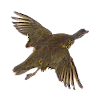
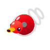

Bird 飛鳥
用條件判斷控制小鳥飛行，支援角度觸控輸入。
六個 Blockly 教學遊戲集中在這裡。數字、角度和音符欄位已加入大型觸控輸入，適合 iPad 使用。

用條件判斷控制小鳥飛行，支援角度觸控輸入。
使用迴圈畫出圖形，數字欄位改用觸控鍵盤。
用數學方程式控制動畫，數值可以直接點按輸入。
用函式編排旋律，音符與數字欄位支援觸控。
從積木逐步學習 JavaScript，支援觸控數字與角度。

設計自己的鴨子程式，角度和數字可用觸控輸入。
原始 Blockly Games 為 Apache-2.0 開源專案；本機觸控調整與資源說明見 blockly-games/NOTICE.md。